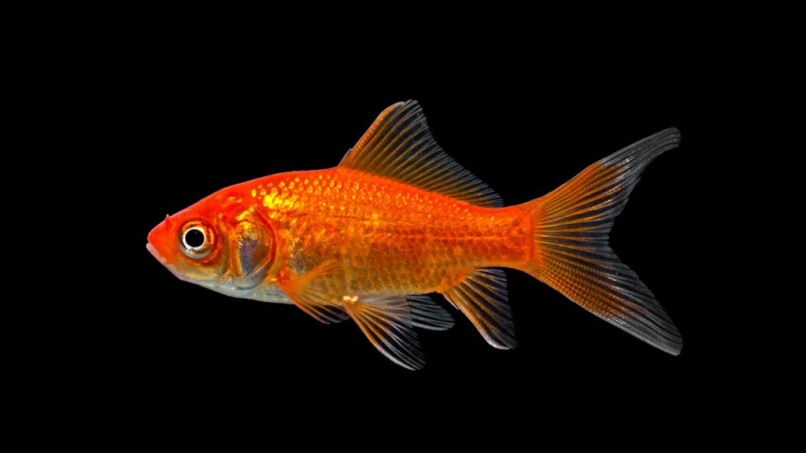

Artcle 3
Poisson Rouge
Le poisson rouge commun (Carassius auratus) est un poisson d'eau douce robuste et très populaire, reconnaissable à son corps fuselé et sa couleur orange vif. Issu de la carpe dorée asiatique, il peut mesurer entre 15 et 35 cm à l'âge adulte et vivre jusqu'à 15 à 20 ans si ses conditions de vie sont respectées.
| Nom de L'Article | Prix de L'Article | Image de L'Article |
| Poisson Rouge | 10.50€ |  |
Aller à la Page d'Articles